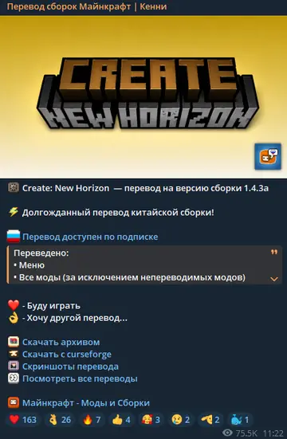
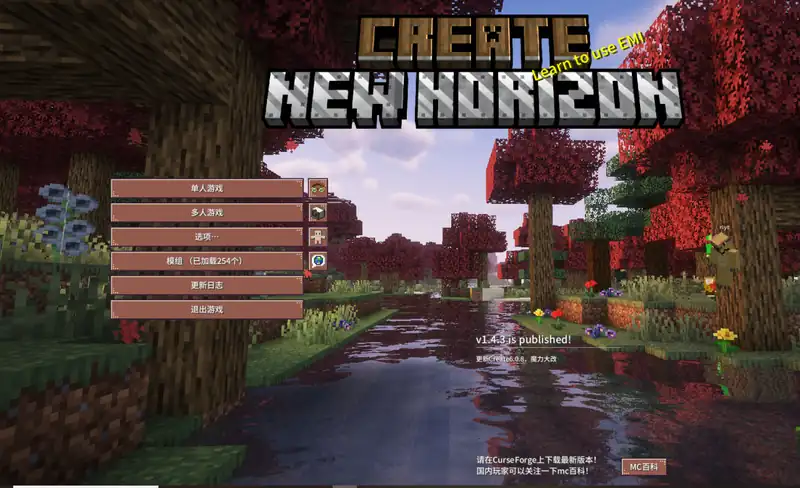
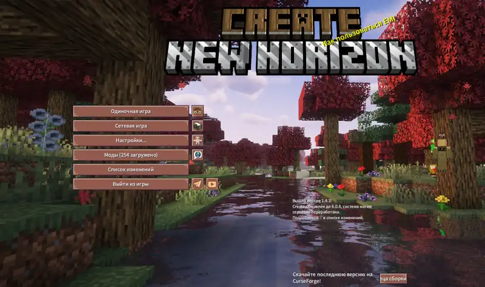
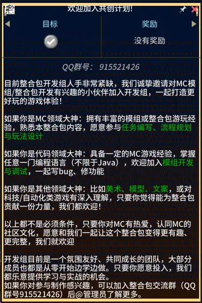
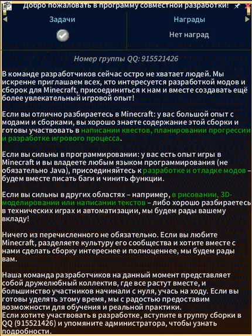

Chinese → Russian
Create: New Horizon
Originally a Chinese modpack with a large amount of quest and mod content. The main challenge was keeping terminology consistent across menus, quests and custom content.
QuestsModsGUITerminologyIn-game QA

Published by KennnyMc
75.3K views on captured post
75.3K views on captured post
Main menuhigh-resolution comparison
Original中文

LocalizedRU

Long-form quest text
Original中文

LocalizedRU

Click any screenshot to open the larger version.